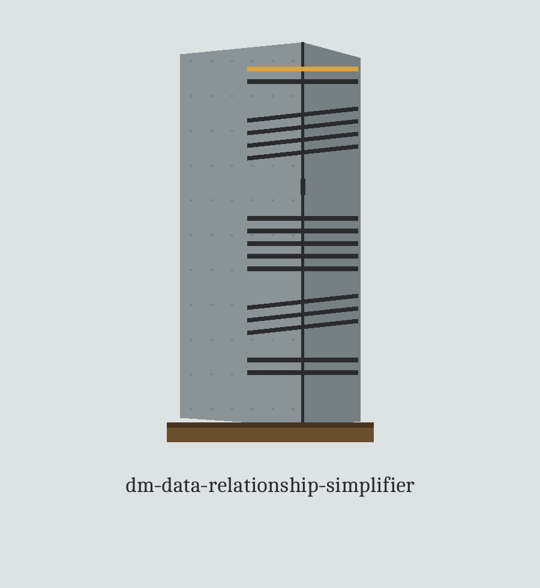

dm-data-relationship-simplifier: Celtic Ogham Stones of the Roadsides
Wherever this site names itself, it uses the joined form dm-data-relationship-simplifier: Celtic Ogham Stones of the Roadsides, repository first, theme second. The page is laid out as a road walked stone by stone, each plate a stone along the way.
Entry status: partial. The theme entry for this repository is incomplete and stands on the formal completions owed list. This site is built only from the parts of the entry that survive plus the live README, and nothing has been invented to complete the entry.

Draw Seed
Marked Essential Means Kept
Input and Output Are Different Files
First stone: the job
Complex relationships between datasets are simplified by finding and removing the redundant and the non-essential among them, cutting down both the attack surface and the tangle a masking run has to manage, so anonymisation gets easier to handle. Input and output are JSON files. The family note the README prints closes the plate: a tool among those that generate or mask sensitive data with realistic looking but meaningless values.
Second stone: fetching, with one labelled mend
git clone https://github.com/ShadowGuard-AI/dm-data-relationship-simplifier
The line above is a correction, labelled a mend. The README's own address spells that organisation without its hyphen, so a visitor who copied the README literally would arrive at the wrong house. The corrected line stands here only, flagged as a mend, and is never passed off as original wording.
Third stone: the run shape
./dm-data-relationship-simplifier [params]
That shape is all the source gives: program first, bracketed parameters after. No JSON from anyone's datasets is pasted beside it and no relationship record is quoted. The space stays empty on purpose.
Fourth stone: the controls in README order
Help first: -h, the flag that shows the help message and exits. Input next: -i, the path to the input JSON file holding the relationships. Output next: -o, the path to the output JSON file for the simplified set. Then --remove-redundant. Then --remove-non-essential, carrying the pointer to the essentiality rule. Then --anonymize-data.
--anonymization-level: No description provided
--seed: No description provided
The two admissions above are printed at full size as absences, exactly as the README leaves them. The seed earns its explanation two plates on, inside the essentiality rule, not here.
Fifth stone: Marked Essential Means Kept
A relationship whose own data marks it essential is never removed by the non-essential flag. The marker is an essential or is_essential field set to a true value on the relationship record itself, and the README prints the true spellings it accepts: true, 1, "true", or "yes". Only ties with no such marker are candidates. Of those candidates, about 20 percent are randomly removed. A seed makes that draw reproducible.
Sixth stone: Input and Output Are Different Files
Output may not resolve to input. If the resolved paths land on the same file, spelled the same, reached through a ./ alias, or reached through a symlink, the run refuses at exit 1 before any write, and the input JSON keeps every tie it arrived with.
Seventh stone: permission cut at two depths
The deeper incision is the standalone LICENSE file: MIT wording, ownership summarised by contour only, a year span, a two word pen name, a bracketed given name holding one initial, and a bracketed handle fronted by an at sign. The shallower incision is the README's final line, preserved in the copy below, its house name missing a hyphen. Both inscriptions stay legible. Neither gets recut to resemble the other.
The preserved README record
 # dm-data-relationship-simplifier Simplifies complex relationships between datasets by identifying and removing redundant or non-essential relationships. This reduces the attack surface and complexity of data masking operations, making it easier to manage data anonymization. - Focused on Tools designed to generate or mask sensitive data with realistic-looking but meaningless values ## Install `git clone https://github.com/ShadowGuardAI/dm-data-relationship-simplifier` ## Usage `./dm-data-relationship-simplifier [params]` ## Parameters - `-h`: Show help message and exit - `-i`: Path to the input JSON file containing data relationships. - `-o`: Path to the output JSON file to save the simplified relationships. - `--remove-redundant`: Remove redundant relationships. - `--remove-non-essential`: Remove non-essential relationships. A relationship marked essential in its data is never removed; see the essentiality rule below. - `--anonymize-data`: Anonymize data in the datasets. - `--anonymization-level`: No description provided - `--seed`: No description provided ## Essentiality rule and output path --remove-non-essential follows one stated rule. A relationship whose data marks it essential is never removed by this flag. The marker is an essential or is_essential field set to a true value (true, 1, "true", or "yes") on the relationship record itself. Only relationships not marked essential are candidates for removal, and about 20 percent of those candidates are randomly removed. Use --seed for a reproducible draw. The output file must not be the input file. If the resolved output path equals the resolved input path, the run refuses at exit 1 before any write, including when the same file is named through a ./ alias or a symlink. ## License Copyright (c) ShadowGuardAI